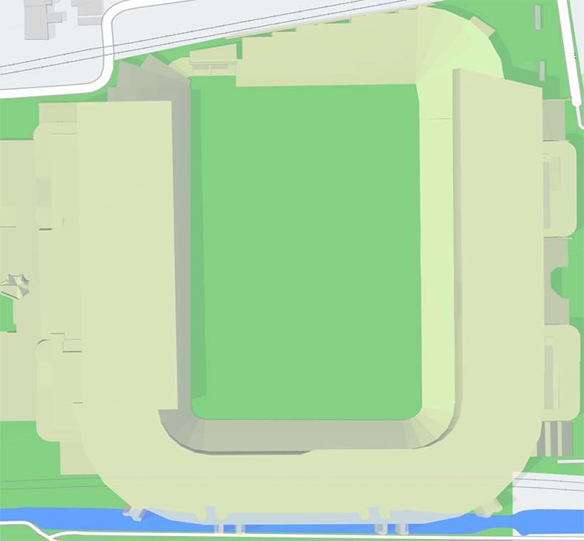

<!-- pickup.page.html -->

<app-toolbar></app-toolbar>

<!-- template of pickup.page -->
<ion-content class="ion-padding">
  <div class="wrapper-container">
    <div class="content-container">
      <div class="header-container">
        <h1>Select Pickup-Point</h1>
      </div>
      <div class="cart-container">
        
        <ion-icon name="pin" style="bottom: 90px; left: 72px" [style.color]="colorOne" (click)="selectOne()"></ion-icon>
        <ion-icon name="pin" style="bottom: 292px; left: 265px" [style.color]="colorTwo" (click)="selectTwo()"></ion-icon>
      </div>
    </div>
  </div>
</ion-content>